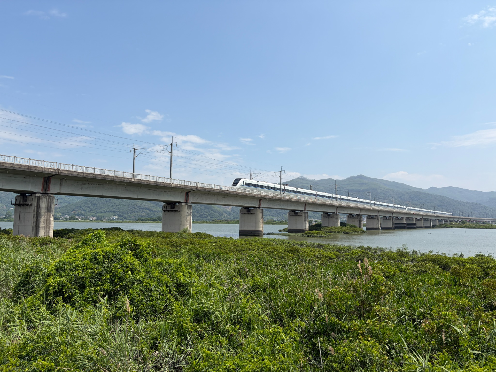

Monthly field experiment of clonal Acanthus finished in Zhangjiang estuary
Dekai Chen, Hongtao Chen, and Jiayu Wang finished monthly field experiment, measuring the clonal traits of Acanthus ilicifolius along inundation and salinity gradients.

Deserve sharing.
Dekai Chen, Hongtao Chen, and Jiayu Wang finished monthly field experiment, measuring the clonal traits of Acanthus ilicifolius along inundation and salinity gradients.
Jiayu enjoyed the experience during 13-19 September in Nové Hrady, Czech Republic. The course is composed of lectures and practical trait assessments enabling application of taught methods.
Jiayu together with Yihui, Dan, Muwen, Dekai have finished several field investigations of Acanthus ilicifolius along the Zhangjiang estuary since April this year, clarifying the distribution and stand formation.
Jiayu attended the conference of eco-evolutionary dynamics in a changing world during 15-17 May in Wuhan, presenting a registered talk about “A hidden clonal advantage underpins rapid colonization and invasion success”.
Jiayu visted Institute of Botany of the Czech Academy of Sciences in Třeboň, Czech Republic, communicating with a group of plant ecologists interested in knowing all things about plant life belowground, including Jitka Klimešová, etc.
Jiayu attended the 1st Multiple Global Changes on Plants Conference during 30 March-2 April in Konstanz, Germany, presenting a talk about “Multiple global change factors modulate the size-dependent flowering switch”.